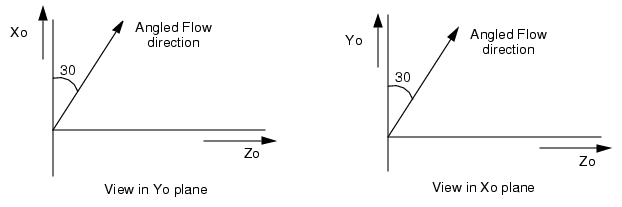

A 3D flow angle
is specified by two angles from the Normal. In such cases, the
Xo- and Yo-direction components are non-zero.
Procedure
- Calculate
the components in the three directions, for example, consider an
angled flow at 30° from the x-axis and at 30° from the y-axis, see Figure 1.
Figure 1. Example of 3D Angled Flow
The X-direction component is
Cos 30°.
The Y-direction component is
also Cos 30°.
The Z-direction component is
Sin 30°.
- Therefore, enter the following
values in the property sheet:
XoN = 0.866, YoN = 0.866, ZoN
= 0.5.
Results
After solution,
tracks and velocity vectors showing the direction of flow can displayed
in Analyze mode.